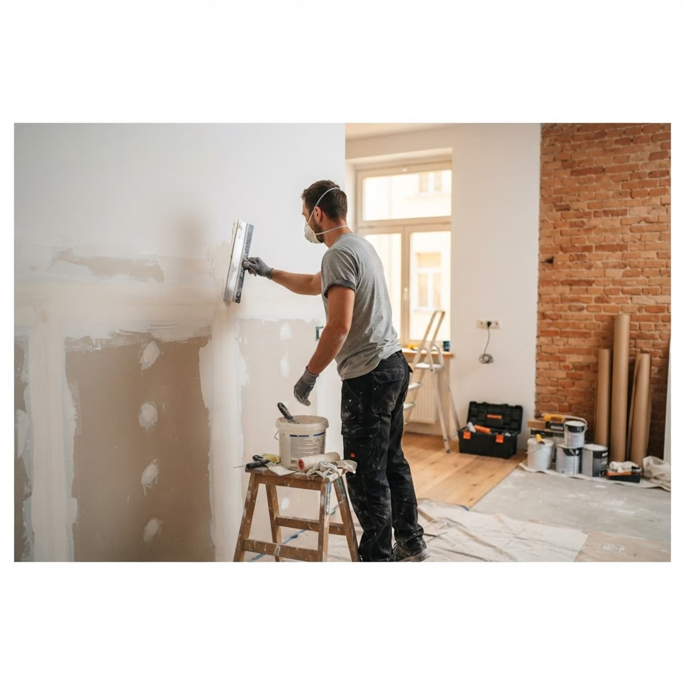

опыт
С 2019 года — и точка
Опыт бригады — 8–10 лет. Работаем по объявлению на Куфаре с января 2019-го: нас ищут повторно и по рекомендации. Принцип простой: этапы не пропускаем, цену не меняем по ходу, «сделано — и точка».
Монтаж ГКЛ, шпатлёвка, малярные работы, покраска, электромонтаж. Ремонтируем квартиры и дома под ключ: сами ведём все этапы отделки, без «позовём ещё кого-нибудь».

Нажимайте на слои пирога стены: увидите, что происходит на объекте и почему пропускать этап нельзя.
Перегородки, потолки, короба и ниши из гипсокартона — по уровню, под чистовую отделку.
Стыки, углы, стены под покраску и обои — без волн и трещин.
Грунтовка и покраска: ровный цвет, аккуратные границы, без подтёков.
Розетки, выключатели, освещение, разводка и щиты — до закрытия стен.
От голых стен до заселения: ведём все этапы сами, объект не гуляет по бригадам.
Работаем по Кобрину и району — «и т.д.» из объявления означает: спрашивайте свой случай.
Опыт бригады — 8–10 лет. Работаем по объявлению на Куфаре с января 2019-го: нас ищут повторно и по рекомендации. Принцип простой: этапы не пропускаем, цену не меняем по ходу, «сделано — и точка».
Оставьте телефон: договоримся об осмотре в Кобрине, назовём честную смету по вашим объёмам. Или звоните сразу.
Сделано И Точка · УНП 291897215 · Кобрин · телефон: +375 29 879-56-52